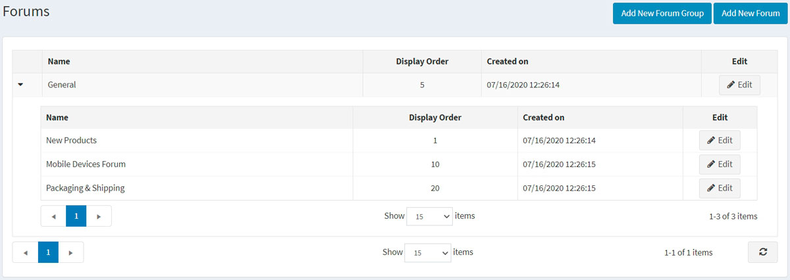
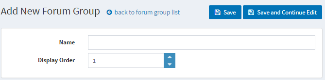
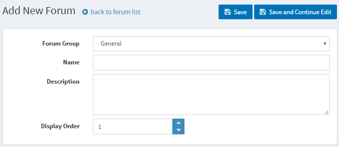
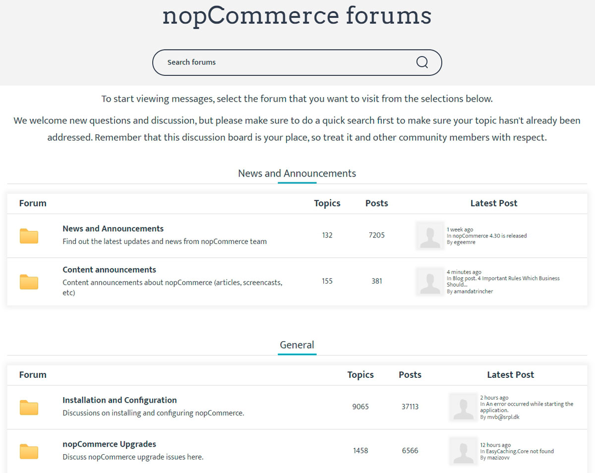
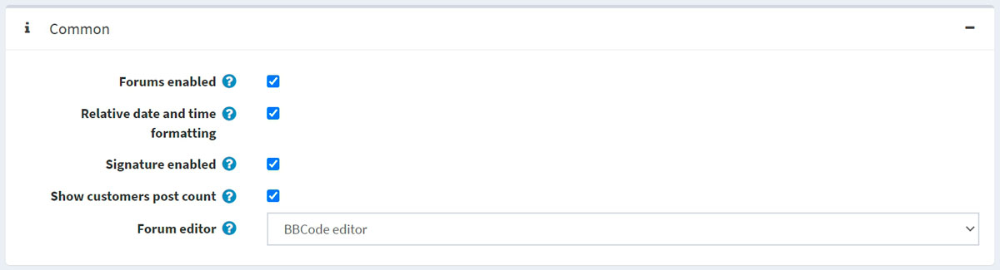
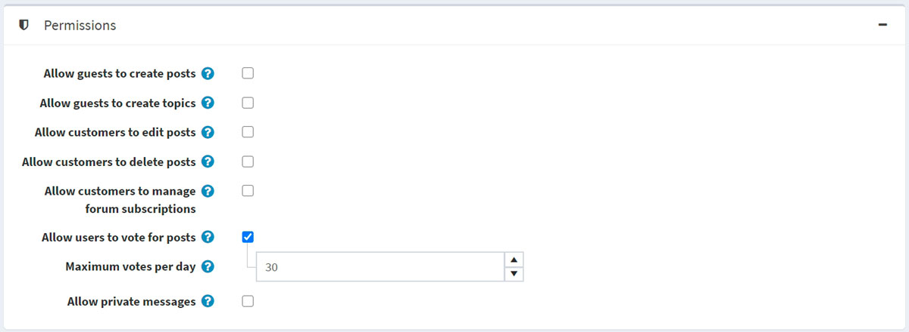
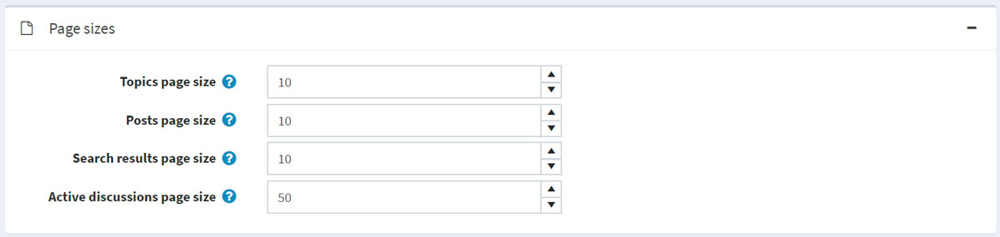
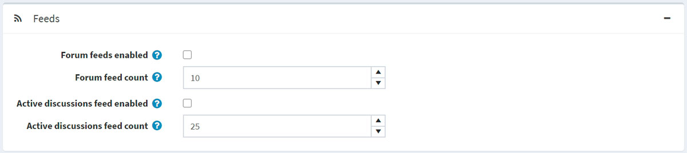

Forums
A forum is an online discussion site where people can hold conversations in the form of posted messages. A forum may contain a number of subforums, each having several topics.
Note
In nopCommerce, forums are disabled by default. To enable forums, go to Configuration → Settings → Forum settings and select the Forums enabled checkbox. The "Forums" link should be displayed in the menu in the public store (top menu or footer in the default theme).
To manage forum groups and forums (inside forum groups), go to Content management → Forums.

Add a new forum group
Click the Add new forum group button.

- Define a new forum group Name.
- In the Display order field, enter the display order of the forum group. A value of 1 represents the top of the list
Click Save.
Add a new forum

- From the Forum group dropdown list, select the required forum group.
- Enter the Name of the new forum.
- Enter the Description of the new forum.
- Select the Display order for the forum group. A value of 1 represents the top of the list
Click Save.
To view an example of how forums should work, go to http://www.nopcommerce.com/boards/.

Forum settings
To access forum settings, go to Configuration → Settings → Forum settings. This page is available in 2 modes: advanced and basic.
This page enables multi-store configuration; it means that the same settings can be defined for all stores or differ from store to store. If you want to manage settings for a certain store, choose its name from the multi-store configuration dropdown list and select all the checkboxes needed on the left to set custom values for them. For further details, refer to Multi-store.
Common

Define the following forum settings in the Common panel:
- Enable forums by selecting the Forums enabled checkbox.
- Select the Relative date and time formatting checkbox to enable the relative date and time (for example, 2 hours ago, 1 day ago).
- You can give an opportunity to specify customers' signatures by selecting Signature enabled.
- Select the Show customers post count checkbox to enable showing the number of posts created by a customer.
- From the Forum editor dropdown list, select the forum editor type to use:
- Simple textbox.
- BBCode editor.
Note
It is not recommended to change the forum editor type in the production environment.
Permissions

Define the following forum settings in the Permissions panel:
- Allow guests to create posts.
- Allow guests to create topics.
- Allow customers to edit posts.
- Allow customers to delete posts.
- Allow customers to manage forum subscriptions.
- Select the Allow users to vote for posts checkbox to enable voting.
- The Maximum votes per day field sets the number of votes a user can do per day if the previous setting is enabled.
- Enable private messages by selecting the Allow private messages checkbox. If enabled, the following two settings will be visible:
- Select the Show alert for PM checkbox to enable the alert pop-up window if a new private message was received.
- Select the Notify about private messages if a customer should be notified via email about a new private message.
Page sizes

Define the following forum settings in the Page sizes panel:
- Topics page size — the page size for topics in forums, for example, '10' topics per page.
- Posts page size — the page size for posts in topics, for example, '10' posts per page.
- Search results page size — the page size for search results, for example, '10' results per page.
- Active discussions page size – the page size for the active discussions page, for example, '10' results per page.
Feeds

Define the following forum settings in the Feeds panel:
- Select the Forum feeds enabled checkbox to enable RSS feeds for each forum.
- In the Forum feed count field, set the number of topics to be included in each feed.
- Select the Active discussions feed enabled checkbox to enable RSS feeds for active discussion topics.
- In the Active discussions feed count field, set the number of discussions to be included in the "Active discussions" feed.